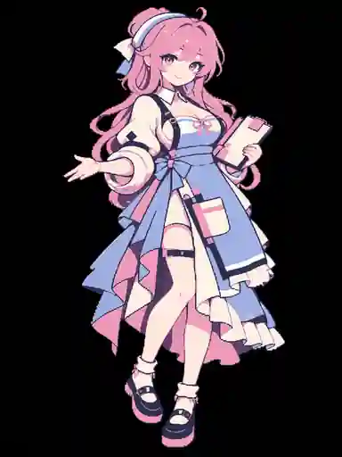
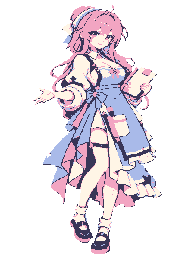

01 · CONVERT / 真像素转换
假像素 → 原生像素
上传角色或游戏素材，锁定 D 风格四色，在真实的像素网格中检查轮廓与颜色，导出无插值 PNG。
已可用 固定 384×512 网格、严格四色、像素坐标取色、网格放大、PNG 导出。
研究中：机器学习修复细节，目前固定色板/面积投票仍是保真输出，不冒充已达到完美。
进入 01 · 真像素转换
研究中：机器学习修复细节，目前固定色板/面积投票仍是保真输出，不冒充已达到完美。
D「雾樱玻璃」是当前游戏默认美术方案。所有人物、场景与道具将遵守同一规格。这里只展示完整人物立绘的正式工作流程；旧头像、微型动作和模板换脸实验不再作为系统02内容。
2026-10-31 用户确认视觉方向。逐人记录头骨、眼睛、鼻子、嘴巴、动作、破框、配色与专属禁忌。哑光、无油亮五官、非通用AI动漫脸；保留单元格安全距离。这是独立研究图鉴，不替代完整全身D四色训练集。
进入 V4 25人完整提示词档案 · 支持逐格复制
完整粉发蓝衣人物。已将384×512彩色参考和192×256透明索引色版本都保存至GitHub，保留旧人物、旧系统和游戏正式角色不变；美术验收尚未通过。
看新人物、逐格网格与下载PNG · 查看未通过的像素质量审查
独立重新设计的全身人物、服装与手势，原生192×256四色透明PNG。尚未通过正式美术验收，也未覆盖当前游戏角色。
查看每个像素的精修原因 · 原图网格 / 旧老板娘抠图检查独立于原有两个主系统的科研实验台。R0 可审计程序基线、固定四色与身份隔离数据登记；R1 神经网络代码尚待真实艺术数据训练。绝不冒充完成训练。
进入 PIXEL CHARACTER AI LAB · 研究工作室上传角色或游戏素材，锁定 D 风格四色，在真实的像素网格中检查轮廓与颜色，导出无插值 PNG。
用真实训练的强化学习选择策略与色块拓扑，清理现有人物的无意义孤立色块。点击任何像素查看保护原因、修改邻域证据或语义未知。